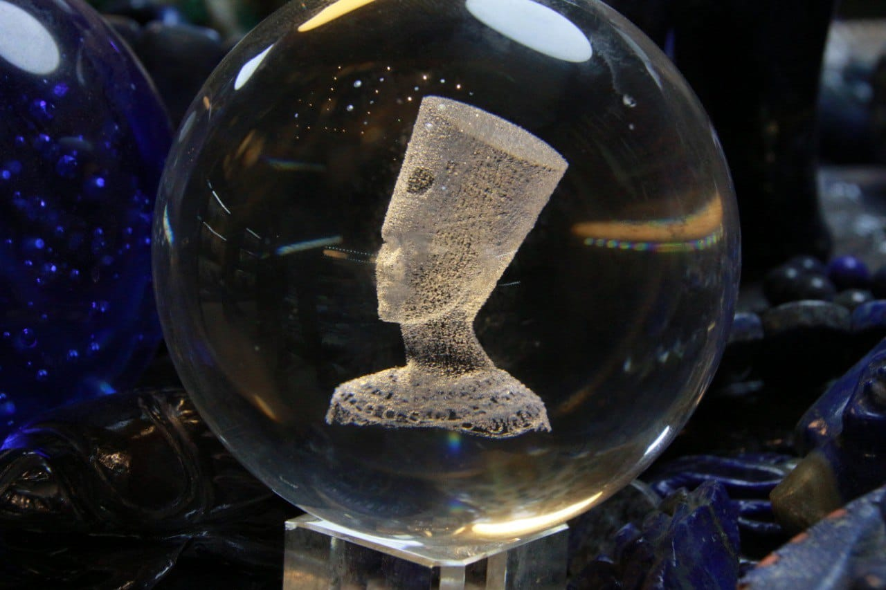

على لسان أهل الخبرة..جولة متعمقة داخل عالم الأحجار الكريمة
يهتم قطاع كبير من القراء منذ قديم الزمان بفقرة الابراج الفلكية وحظك اليوم في الجريدة اليومية، ومنهم من يهوى قراءة الفنجان والكف، وانتشرت في السنوات الأخيرة فكرة ارتباط الأحجار الكريمة بالطاقة الداخلية للإنسان وتأثيرها عليه بالإيجاب أو السلب، الأمر الذي قد يختلف معه الكثيرون ولكن في الحقيقة تختلف معتقدات الناس فيما يخص تلك النقطة، فبعض الناس يرتدونها كتميمة حظ يتفاءلون بها، ومنهم من يؤمن بتأثيرها عليه بشكل فعلي، ومنهم من يتفاعل معها لأسباب تجارية تخص عمله، لكنه في الحقيقة لا يعتقد أن لها قيمة روحية بل مجرد أحجار قيمة ماديًا، لذا يستعرض لكم فريق عمل المجلة في الموضوع التالي، آراء مختلفة ومتعددة من خبراء في الأحجار الكريمة عن كل ما يعرفونه ويؤمنون به فيما يخص طاقة الأحجار الكريمة.
- يقتحم الكثير من الناس عالم الأحجار الكريمة كهواة ولكن يتطور بهم الأمر بالانغماس والتعمق في المجال، وهذا بالضبط ما حدث مع أكرم الروماني، صاحب مركز اسكندرية للاحجار الكريمة والسبح الذي بدأ في هذا المجال كهاوي منذ عام 2008: "كنت غاوى من سنين طويلة، أصحابي لما يشوفوني لابس خواتم يخدوها هدايا، بعدين بقوا بيعرضوا فلوس، بعدين فيه صديق قالهالي بهزار خلاص هات وبيعلنا بقا"، ليقرر بعدها أكرم أن يتحول من كونه هاوي إلى تاجر في عام 2015.
- قسم أكرم الزبائن إلى نوعين، فهناك من يشتري الأحجار لشكلها الجمالي والزينة، وهناك من يبحث عن طاقة الأحجار، وتتفاعل طاقة الأحجار مع البشر لأن مكونات أجسامنا هي نفس مكونات الحجر، وعلى هذا الأساس تتفاعل مع الأحجار بالإيجاب أو السلب، وهناك إشارات تدل على عدم توافق الجسم مع طاقة الحجر. ففي حالة عدم توافق طاقة الحجر مع الجسم، يمكن الشعور بحرارة في مكان ارتداء الحجر أو بحساسية حوله، وإن تمادى الشخص في تجاهل الأمر، يمكن أن يقع الحجر أو ينكسر، لكن في حالة التوافق بين الشخص وطاقة الحجر ينتج عن ذلك حالة تناغم بين الطرفين. كما أوضح أكرم بأن هناك علاقة بين الأحجار الكريمة والأبراج: "تقدر تسأل خبير ابراج عن الأحجار المناسبة ليك وبعدين تيجي لتاجر الأحجار يطلعهالك في شكل حجر أو خاتم أو قلادة أو أسورة أو سبحة أو غيره" ومن وجهة نظر اكرم فالأحجار ليست مجالا للاستثمار بل هي وجهة للتجاره فقط مع أن من الممكن أن تكون أغلى من الذهب والفضة؛ وذلك لأنه في حالة الرغبة ببيع ذهب أو فضة فبإمكان الشخص بيعهم بكل سهولة، عكس الأحجار وذلك لوجود بروتوكولات ومن الممكن وان تبخس من التجار ، لذلك هي وجهة للتجاره فقط وليس الاستثمار . بالإضافة إلى أن مصادر الأحجار الكريمة عديدة ومنها ما هو في البر ومنها ما هو في البحر، ومصر تحتوي على العديد من تلك المصادر ومنها جزيرة الزبرجد، وفي سيناء يستخرج الفيروز، واليسر بالبحر الأحمر، والعقيق المصري والجاسبر والكوارتز والسترين وايضًا المرجان.
- "سيبك من الكلام اللي نيللي كريم بتقوله في مسلسل فراولة ده كله دجل وشعوذه ونصب على الناس"، بتلك الكلمات وصف تاجر أحجار كريمة بمنطقة المعز الذي يدعى شريف حسن، علاقة الأحجار الكريمة بالابراج الفلكية، موضحًا أنه وضع على الكارت الخاص به الأحجار التي تتناسب مع شهور الميلاد يائسًا من محاولات الزبائن المستمرة في البحث عن الحجر الذي يتوافق مع أبراجهم. يعتقد شريف الذي قضى 50 عامًا في مجال الأحجار أن الطاقة الخارجة منها ليست بطاقة رابطة وثيقة بين الحجر والشخص ولكن كل مافي الأمر أنه مجرد ارتياح بينهم، ولكن بحكم خبرته فإن أكثر حجر يولد طاقة بحسب أراء الزبائن هو الكوارتز.
- تعمق جرجس بديع، هاوي وبائع للأحجار الكريمة من منطقة المنيا، في كل نوع من أنواع الأحجار، وطاقته وقيمته كمؤثر على جسم الإنسان، موضحًا أن الأحجار قيمتها المادية يتم تحديدها على أساس صلابتها، لذلك فإن أغلى الأحجار الكريمة هو الماس نظرًا إلى أن صلابته الأعلى، واصفًا عالم الأحجار بأنه بحر واسع: "الأحجار زي الدوامة بتسحب اللي فيها لأكثر مراحل اللذة، وتحاول تقربك ليها بكل الطرق" "الحجر ينادي صاحبه" تحدث جرجس باستفاضة عن طاقة الأحجار، فكل نوع يمتلك طاقة مختلفة تمامًا عن الآخر، وأولهم الياقوت الذي يُطلق عليه سيد الأحجار، وطاقته مختصة بنشاط الجسم حيث تبعث النشاط وتدفق الدم في الجسم ويعمل على تخفيف الآلام الدورة الشهرية والحمل للنساء، فوصفه "جرجس" قائلاً: ربنا أكرمه بالخواص دي. استطرد جرجس حديثه عن الأحجار بالإشارة إلى الجارنيت، والذي يباع في أغلب الأحيان على أنه ياقوت، لكن يمكن تمييزه في تلك الحالة من الشوائب، وفوائده عظيمه من ناحية تنشيط طاقات الذكاء والفراسة: "كان يرتديه الأمراء وكان بيستخدم لأنه بديل للياقوت في فتره كبيره، لكن الياقوت هو اللي حظي باسم كبير بين الاحجار". تحدث جرجس فيما بعد عن حجر الجاد، الذي يختص بجزء طاقة الحب، حب الروح وليس المادة، والذي يمتلك فوائد أخرى مثل العمل على زيادة التركيز وبعث الهدوء في نفس حامله، أما بالنسبة لحجر الزمرد، فهو على هرم السيادة مع الياقوت بسبب استخدامه قديمًا كرمز للحب، بالإضافة لطحنه ووضعه في العديد من الأدوية لعلاج مشاكل المخ والأعصاب. "الزمرد أفضل الأحجار الكريمة، وله أكبر شعبية، طاقة الزمرد الأصلي فعلا لا تقهر، وقادرة على نشر الحب والسعادة والجمال بينها وبين أفراد الأسرة والأصدقاء" قال جرجس تلك الكلمات واصفًا الزمرد. أضاف جرجس في حديثه عن الأحجار الكريمة مشيرًا إلى حجر الأوبال وهو من الأحجار التي تجذب طاقة الذكاء والفطنة والهدوء والتغلب على الخوف لحامله، بجانب السترين الذي يطلق عليه حجر التجار لأن التجار يحبون إقتناءه ظنًا منهم أنه يساعدهم على جذب الأموال وتوطيد العلاقات التجارية. استبدل القدماء المصريين فيما مضى الذهب بالأحجار الكريمة نظرًا لمدى قيمته، وكانوا يخفون البرديات الخاصة بأي معلومات عن الأحجار الكريمة، نظرًا لاستخدامهم لها في العديد من العلاجات والأدوية. فيما سبق تم ذكر الأحجار التي يتم استخراجها من الجبال، ولكن هناك أحجار يتم استخراجها من المياه مثل اللؤلؤ والمرجان والصدف والمحار البحري والمرجان، وما يسمى بعروق السواحل، وهناك أحجار نباتية مثل الكهرمان المستخلص من صمغ الأشجار، والمستكة.

- وبالحديث مع سونيا الحبال، خبيرة علم الفلك والتاروت، أوضحت أنه لا يجب معاملة الأحجار على خاماتها ولكن نعاملها على أساس ألوانها حيث أن لكل إنسان ألوان معينة تدعمه على أساس شهر ميلاده والتي تكون مستوحاة من الخمس عناصر الأساسية للكون وهم النار و الماء والأرض والخشب والمعدن. لذا على سبيل المثال إذا كان عنصر الإنسان خشب إذًا فالألوان التي تدعمه تكون ضمن الأحمر والبرتقالي ومشتقاتهم، والمعدن يكون اللون الفضي ومشتقاته هو الداعم لأصحاب ذاك العنصر، وبالتالي يمكن ارتداء اللون الداعم على شكل ملابس أو أساور أو أحجار كريمة كنوع من أنواع الاستبشار بها. وأشارت سونيا إلى أنه لا يصح أن نقول على حجر معين أنه يجلب طاقة الرزق أو يمنع الحسد، الألوان غير المناسبة يمكن أن تحدث طاقة عكسية، بالرغم من أن الحجر طاقته عالية مع الآخرين ولكن في الحقيقة تلك عبارات ترويجية ليجذب بها التجار انتباه الزبائن. ما بين مؤيد ومعارض لفكرة الأحجار الكريمة أو بعض النقاط خلالها فلا يمكن إنكار أنها تهم قطاع كبير من الجماهير، حتى بالنسبة إلى الذين لا يؤمنون بفكرة الطاقة المنبعثة منها إلا أنها مازالت مجال مثير للاهتمام، ويبعث الفضول في نفس القارئ عن تلك العبارات والأقاويل المنتشرة عن تأثير الأحجار الكريمة في حياتهم ومدى صدقها.
التعليقات
سبحان الخلاق
اكتب تعليق